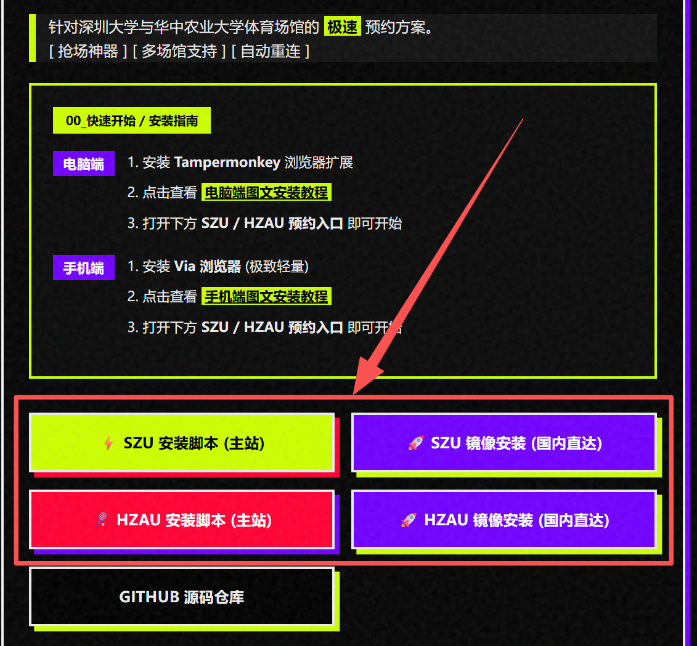
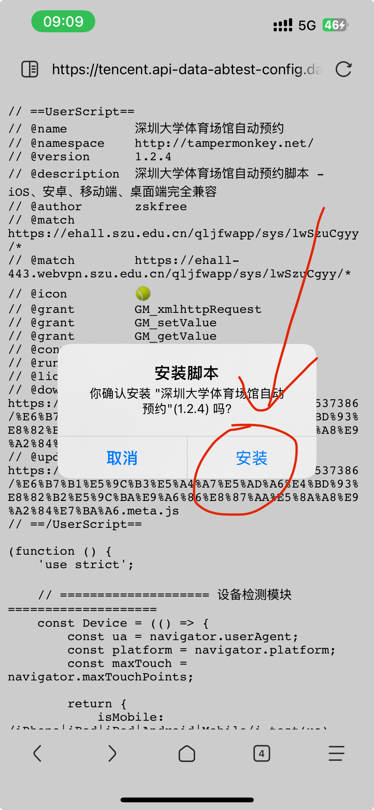
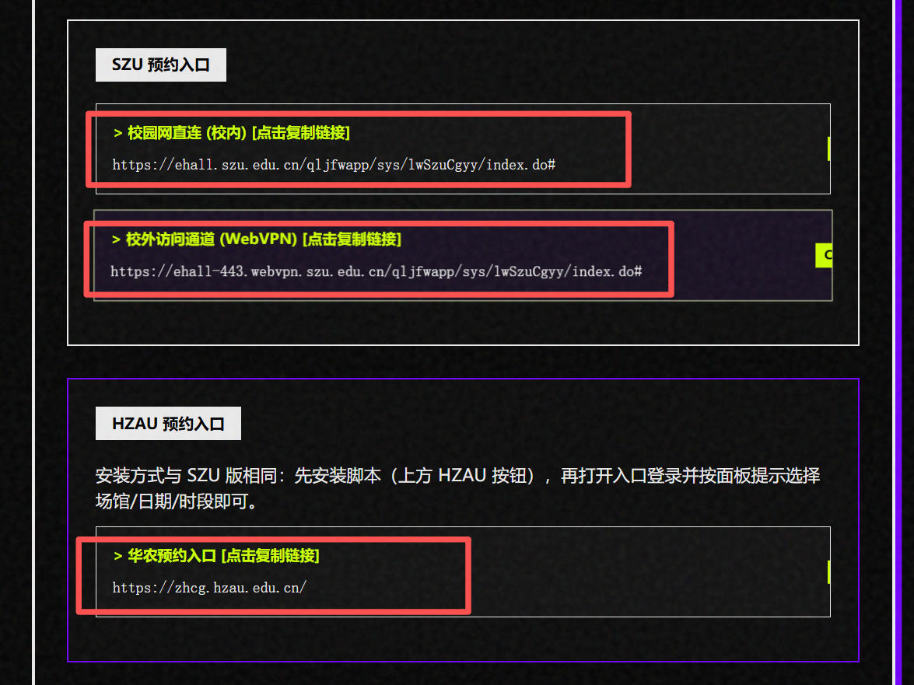
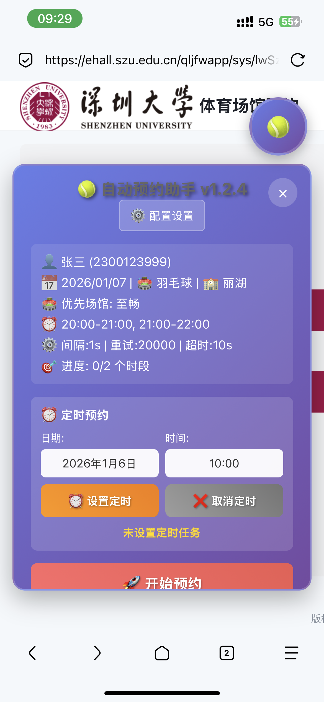

手机端安装脚本教程（通用）
本指南将手把手教你在手机上安装并运行预约脚本。
核心思路：安装支持脚本的浏览器 → 安装/导入对应学校脚本 → 打开该学校预约入口页面。
01. 下载 Via 浏览器
先在应用商店搜索并下载 Via 浏览器。它是一款追求极简、极速的浏览器，非常适合运行 Tampermonkey 脚本。

02. 访问安装页面
使用 Via 浏览器打开 脚本介绍首页（建议先看完后续的步骤再点击打开这个网址） https://www.zskksz.asia/SZU_Sports/
03. 安装脚本
1. 在安装页选择你要使用的脚本，点击对应的 安装按钮（例如“主站安装 / 镜像安装”，哪个能打开就用哪个，国内一般使用镜像安装）。
2. 在脚本托管页面点击"安装此脚本"，等待加载。

3. 在 Via 浏览器弹出的确认页面点击"安装"按钮。

04. 开始使用
1. 返回脚本安装页/项目首页（或你新增学校的聚合首页）
2. 找到预约入口，点击对应的链接，地址会自动复制。
3. 在 Via 浏览器搜索栏粘贴链接并打开，即可看到脚本界面并开始预约。
如果打开后没有看到脚本界面：请确认脚本已启用、脚本已成功安装，并且当前打开的页面域名与脚本匹配的预约入口一致。